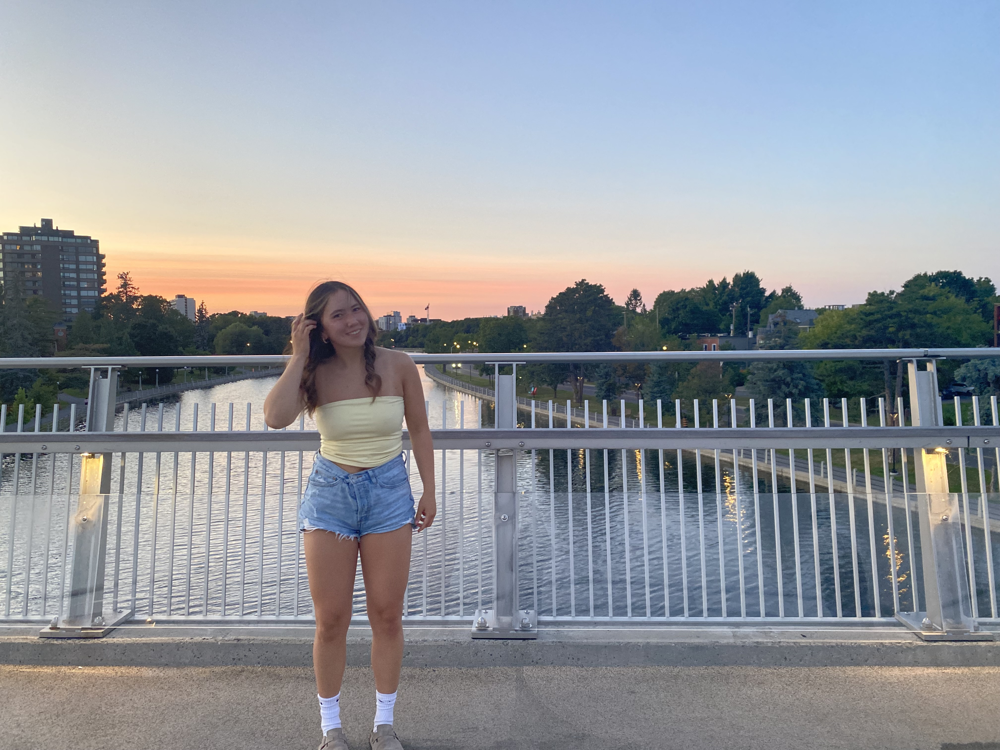

About Me
Hello, My name is Anna Bimm , I was born in Kazakstahn, Almaty on August 1st, and i had got left at a neighborhood park as a baby. I got adopted by my Mom, and she flew me back to Canada and I became a citizen. I had found out about 2 years ago that I have a half brother, Joshua who had also been adopted and lives in Conneticut.
I have two dogs, Chunky and Lola- they are mini golden doodles and I enjoy going on walks with them at a local forest we goto. I love playing sports, like basketball, track and field, and football. I had played a lot of competitive basketball during highschool and I still play at Algonquin College.